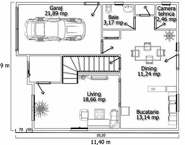
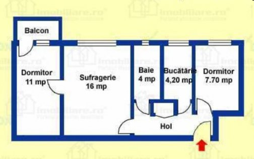

- locuinţa individuală - case cu anexe gospodăreşti sau vile
- locuinţe colective (blocuri de locuinţe) - fiecare locuinţă din bloc se numeşte apartament şi poate avea de la una la cinci camere (garsonieră, apartament cu 2, 3 camere).
Schiţa - desen executat cu mâna libera, la care se respectă o anumită proporţie.
Desen la scară - se realizează cu ajutorul instrumentelor de desen, păstrând acelaşi raport între dimensiunile reale şi cele corespunzătoare din desen.
Scara de reprezentareScara de reprezentare - raportul dintre dimensiunile liniare, măsurate pe desen şi cele reale ale obiectului desenat.
La locuinţe se folosesc scări de micşorare care pot fi:1:200;1:200;1:50.
Etapele în realizarea unui plan:
- realizarea schiţei
- ealizarea desenului la scară:
- se stabilesc punctele cardinale şi se notează pe schiţă
- se măsoară dimensiunile camerei şi se notează pe schiţă
- se alege scara
- se trasează pereţii, se poziţionează uşile şi ferestrele
- se prezintă prin semne convenţionale elementele de mobilier.
Locuinţa decomandată - trecerea dintr-o cameră în alta se face prin intermediul holurilor. 
Locuinţa semidecomandată - trecerea se face dintr-o camera în alta. 